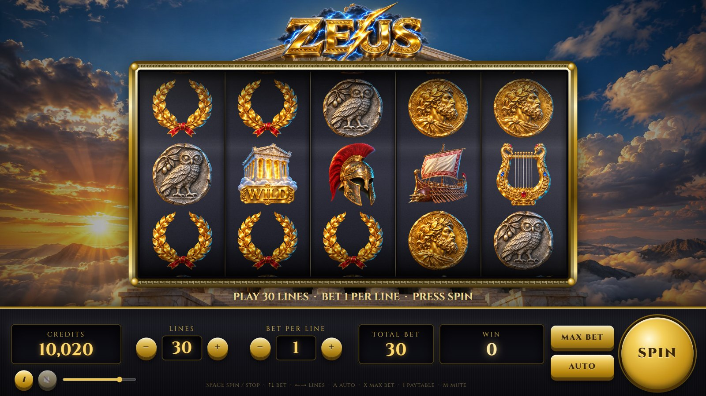
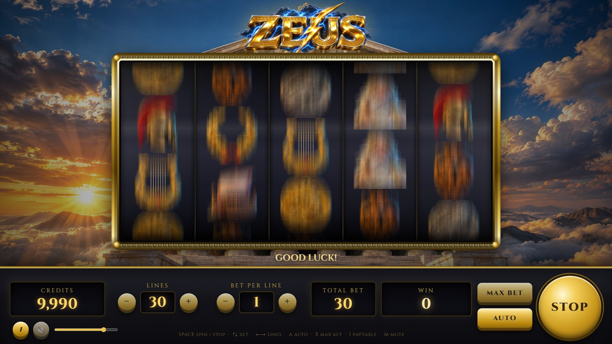
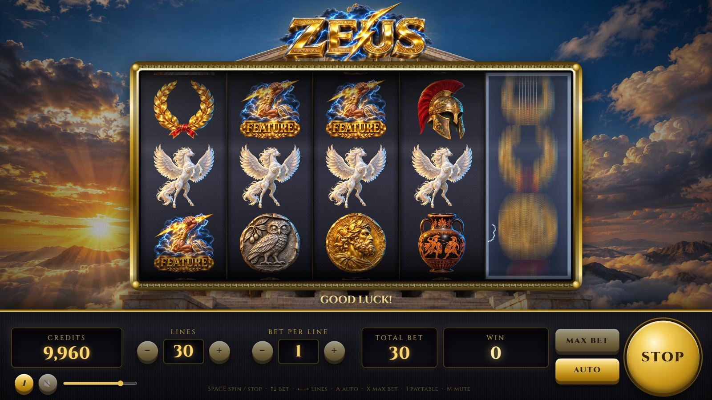
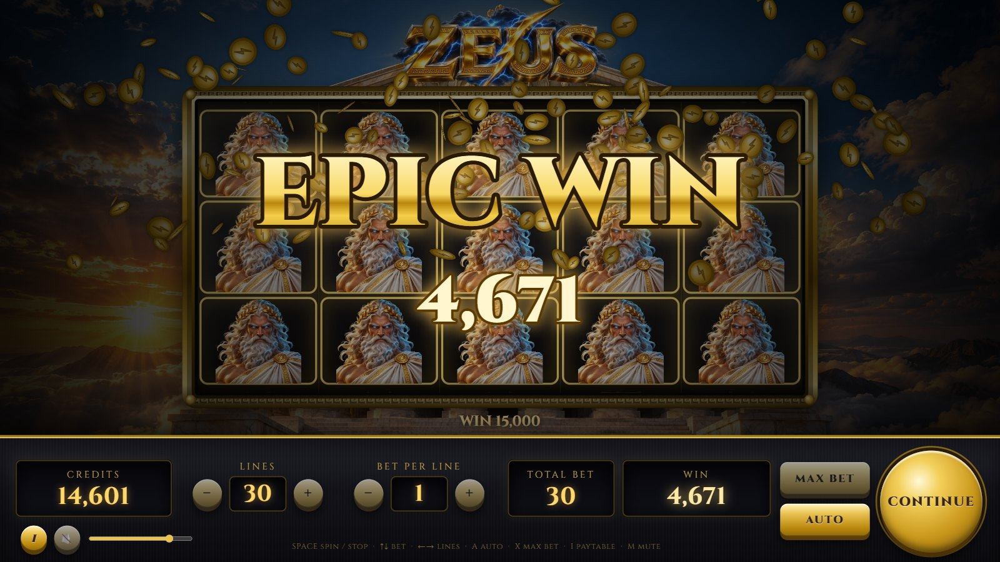
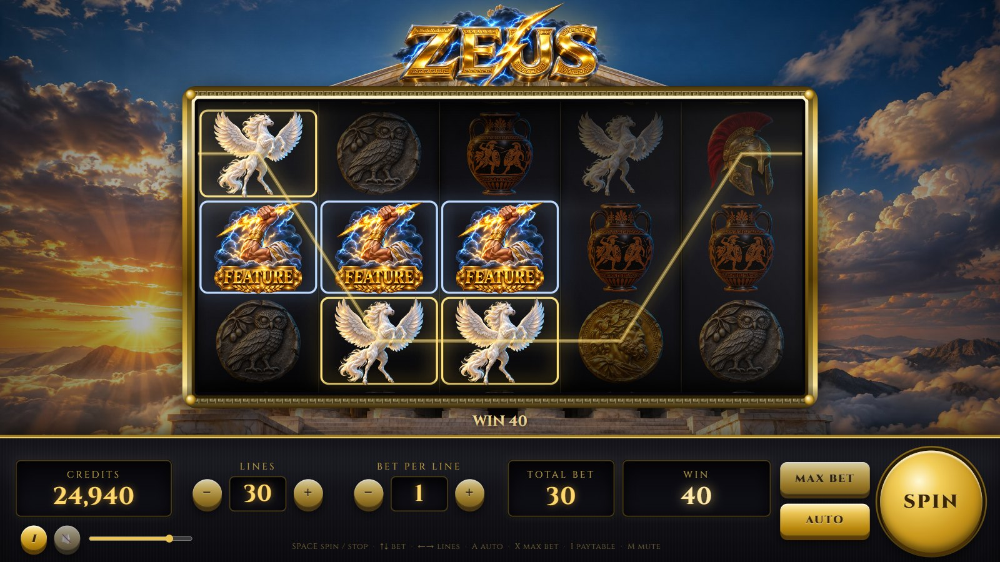
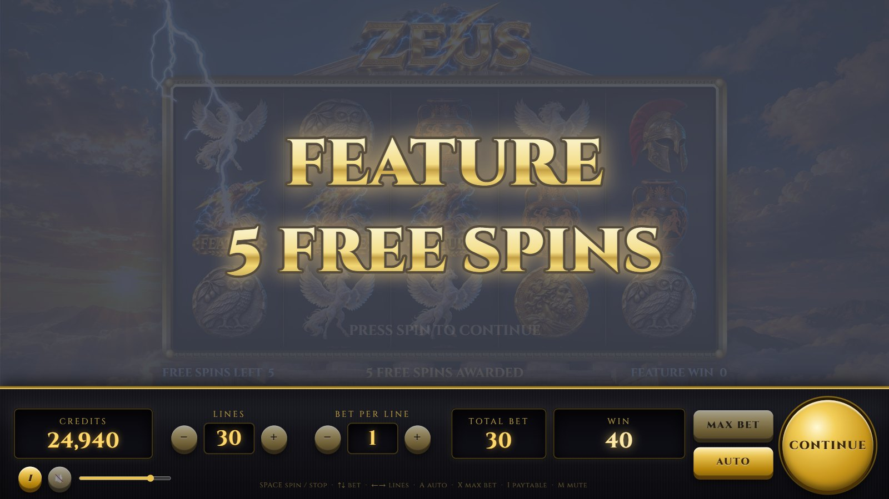
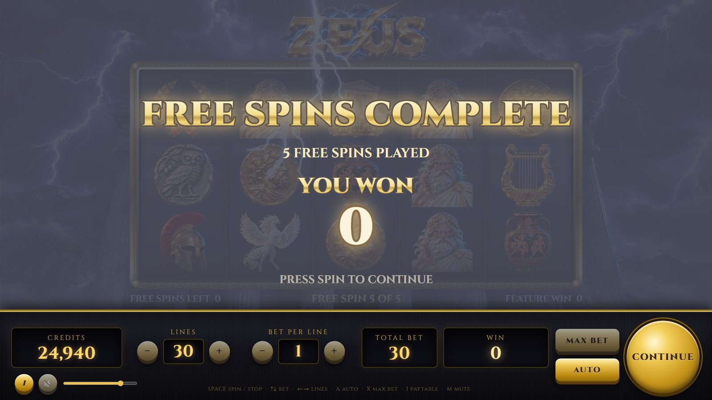
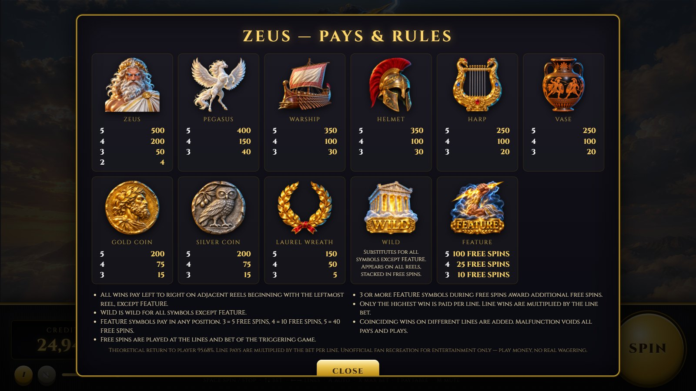

What it is
An unofficial, play-money recreation of the classic WMS Zeus slot machine, written in plain HTML5 Canvas, Web Audio and vanilla JavaScript. No frameworks, no build step, no server-side code — it runs from any static web host or straight from disk. The reel strips reproduce the original paytable and return 95.68% in theory (65.5% base game + 30.2% free spins), with the feature landing about once every 41 spins; add ?classic=1 to the address for the original 10/25/100 balance at 95.96%.
Features
Real reel physics
Pull-back wind-up, acceleration, blurred full-speed spin, constant deceleration, an overshoot and a damped-spring bounce onto the stop. Slam the reels with the spin button.
Anticipation
When two FEATURE symbols have landed the remaining reels spin on with a rising drone, heartbeat thumps and a crackling blue glow.
Free spins
3 / 4 / 5 FEATURE symbols award 5 / 10 / 40 free spins (10 / 25 / 100 in the classic profile) on a storm-lit second reel set with stacked Zeus and stacked Wilds. Retriggers add more.
Photoreal presentation
Cylindrical drum projection, speed-dependent motion blur, drum lighting and glass reflections, animated winning symbols, payline sweeps, procedural lightning and coin showers.
Fully synthesized sound
Reel whir and ticks, mechanical stops, thunder, harp plucks, bells, brass fanfares, roll-up counters and two looping music beds — all generated live in Web Audio.
Verified mathematics
An exact RTP calculator and a Monte-Carlo checker ship with the game, so the reel strips can be tuned and audited.
Screenshots








Controls
| Action | Mouse | Keyboard |
|---|---|---|
| Spin / slam-stop / skip | SPIN | Space or Enter |
| Bet per line | − / + | ↑ / ↓ |
| Lines | − / + | ← / → |
| Max bet and spin | MAX BET | X |
| Autoplay | AUTO | A |
| Paytable | i | I or P |
| Mute | speaker | M |
| Add 1,000 play credits | click the CREDITS meter | — |
Run it yourself
Download or clone the project and open index.html, or serve the folder with any static server
(python -m http.server 8765, or start.cmd on Windows). See the README for the
configuration reference, the RTP tools and the screenshot script.